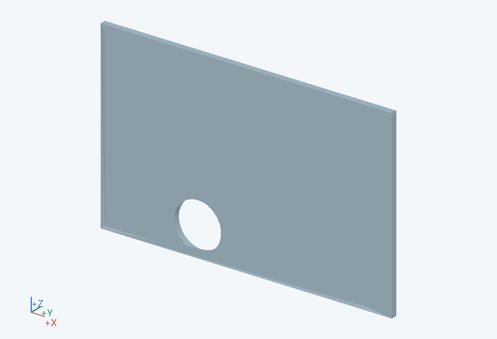
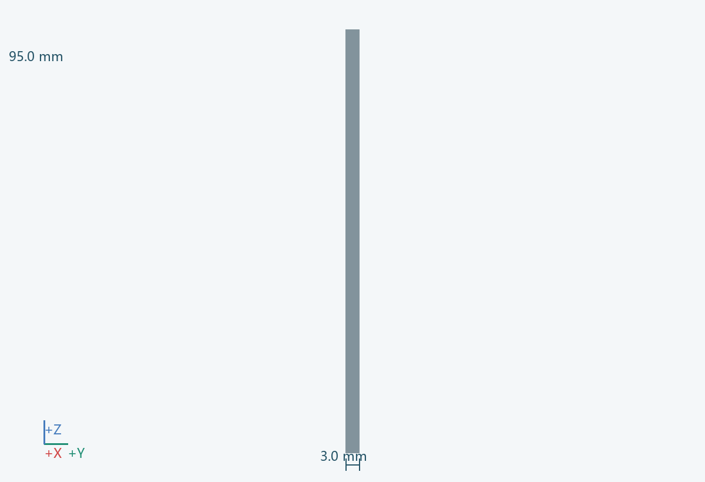
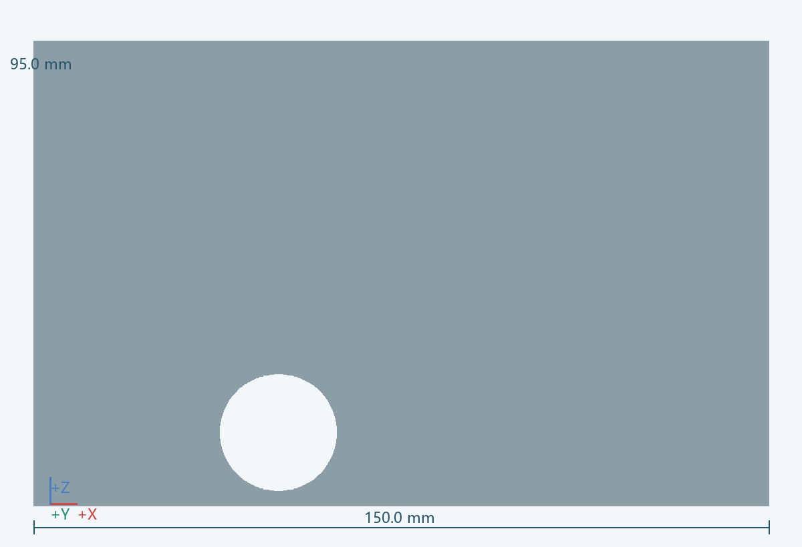

几何包络
150.0 × 3.0 × 95.0 mm（含所示实例）
功能
观察供球与低速检修状态，减少反复拆盖。
连接 / 基准
接 0801；窗口位置不得成为直接手伸入高速轮的通道。
材料 / 工艺
耐冲击透明板候选；不默认使用脆性亚克力
拆装
向外拆出，更换后检查密合。
待验证
厚度不是防爆等级；需评估冲击、紧固和长期磨损。 关联：U07/U09
实例
PRT-0802



150.0 × 3.0 × 95.0 mm（含所示实例）
观察供球与低速检修状态，减少反复拆盖。
接 0801；窗口位置不得成为直接手伸入高速轮的通道。
耐冲击透明板候选；不默认使用脆性亚克力
向外拆出，更换后检查密合。
厚度不是防爆等级；需评估冲击、紧固和长期磨损。 关联：U07/U09
PRT-0802